Project 2 Pattern Formation
Contents
Exercise 1
Exercise 2
type fe.m
function fe(u0,v0,str,dt)
%FE Solves the ODE form of the gray-scott equations numerically
% fe takes initial conditions for u and v, sets F and c for either spots
% or stripes patterns, and numerically solves the ODE form of the
% Gray-Scott equations (i.e. ignoring all partial derivative terms). dt
% represents the time-step between iterations of u and v.
tf = 100; %Final time is 100.
numsteps = ceil(tf/dt); %Works out how many times loop below needs to run.
dt = tf/numsteps; %Re-adjusts dt so numsteps*dt = tf.
clf; hold on
c = .065;
if strcmp(str,'spots') == 1
F = .03;
elseif strcmp(str,'stripes') == 1
F = .06;
else
error('str must be "spots" or "stripes"')
end
%The above conditional sets c and F depending on whether stripes or spots
%initial conditions are wanted.
u = u0; v = v0; %Sets variables u and v to their initial values.
plot(0,u0,'r.'); plot(0,v0,'k.') %Plots initial values of u and v.
for n = 1:numsteps
dudt = -u*v^2 + F*(1-u); %Works out du/dt and dv/dt for u,v at a
dvdt = u*v^2 - (c+F)*v; %specific time n*dt.
u = u + dt*dudt; %Use forward euler method to approximate u at a time
v = v + dt*dvdt; %dt ahead.
plot(n*dt, u, 'r.');
plot(n*dt, v, 'k.'); %Plot u and v for each value of time.
end
legend('u','v')
end
figure(1)
fe(0.5,0.5,'stripes',0.1)
figure(2)
fe(0,1,'stripes',0.1)
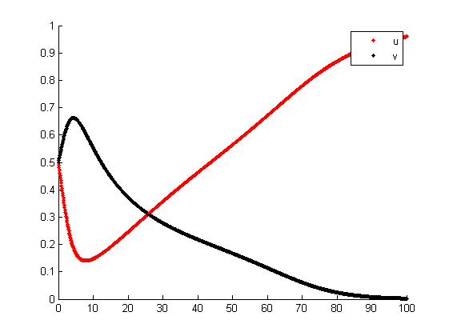 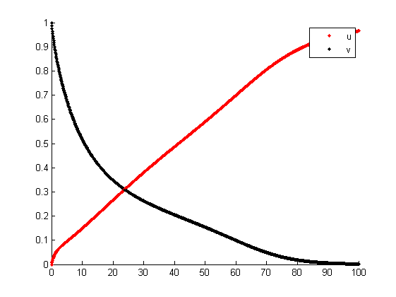
figure(3)
fe(0.2,0.7,'spots',0.1)
figure(4)
fe(0.4,0.2,'spots',0.1)
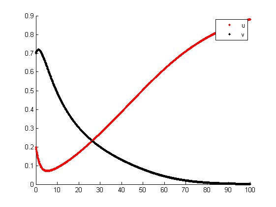 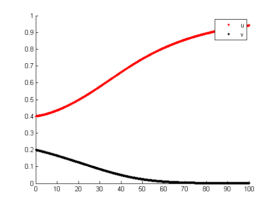
Exercise 3
Exercise 4
lap1d_matrix(4,0.2)
ans =
(1,1) -50.0000
(2,1) 25.0000
(4,1) 25.0000
(1,2) 25.0000
(2,2) -50.0000
(3,2) 25.0000
(2,3) 25.0000
(3,3) -50.0000
(4,3) 25.0000
(1,4) 25.0000
(3,4) 25.0000
(4,4) -50.0000
type lap1d_matrix.m
function L = lap1d_matrix( N , dx )
%LAP1D_MATRIX Produces an N x N second order differentiation matrix
% LAP1D_MATRIX produces an N x N matrix which approximates the second
% partial derivative with respect to x of a periodic function u(x,t) at
% points which are dx apart.
e = ones(N,1); %Creates an Nx1 column vector of 1s
L = spdiags([e -2*e e], [-1 0 1], N, N);
%Creates a sparse matrix with -2's along the leading diagonal and -1's
%along the diagonals 1 above and 1 below the leading diagonal
L(1,N) = 1; %This mean the second derivatives at x=0 and x=1-dx rely on
L(N,1) = 1; %u(x,t) at the other point, giving periodic boundary conditions.
L = L/dx^2;
%Scales the entries of L so it approximates the second partial derivative
%of u with respect to x.
end
Exercise 5
type heat1.m
function heat1( N, dt )
%HEAT1 Numerically solves the 1-D heat equation
% HEAT1 solves the 1-dimensional heat equation with periodic boundary
% conditions on the x-domain [0,1) with a final time of 0.1, and plots
% the exact solution too. N determines how many x-points are plotted, and
% dt determines how often u(x,t) is recalculated.
close all
dx = 1/N; %There are N points in [0,1), so they are 1/N apart.
x = (0:dx:1-dx); %Vector of all the x-points.
L = lap1d_matrix(N,dx); %Produces differentiation matrix.
u = sin(2*pi*x); %Initial condition for u.
uxx = -4*pi^2*u; %Worked out from initial condition for u.
tf = 0.1;
numsteps = ceil(tf/dt); %Uses dt as specified when function is called.
dt = tf/numsteps;
figure(1); plot(x,u,'r.-'); hold on; %Plots intitial condition in red.
for i = 1:numsteps
u = u + uxx*dt; %Forward euler - u solves the heat eqn, so dudt = uxx.
uxx = u*L; %Uses L and new values of u to calculate new values of uxx.
if mod(i,floor(numsteps/6)) == 0 || i == numsteps
plot(x,u,'k.-');
axis([0 1 min(-1,min(u)) max(1,max(u))]);
%Plots u in black at select points in time and when the loop
%finishes, and sets the axes to always include all plotted points.
else
end
end
xlabel('x'); ylabel('u(x,t)');
figure(2); clf; hold on; plot(x,u,'k.-');
syms x; ezplot(exp(-4*pi^2*0.1)*sin(2*pi*x));
%Plots final numerical solution along with exact solution at t = 0.1.
m = exp(-4*pi^2*0.1); %Maximum absolute value of exact solution at t = 0.1.
axis([0 1 min([u,-m]) max([u,m])]);
%Adjusts axes to include all points in both the numerical and exact solutions.
title('Numerical and exact solutions at t = 0.1');
legend('Numerical','Exact'); ylabel('u(x,t)');
end
heat1(16,0.0005)
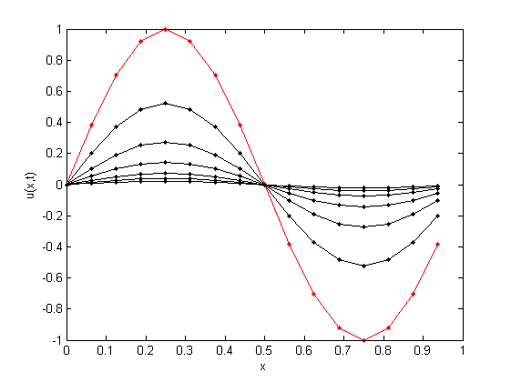 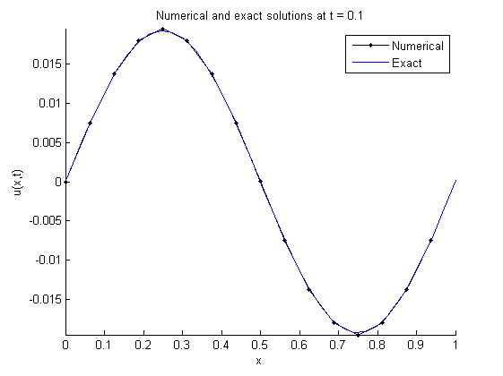
Exercise 6
Exercise 7
heat2
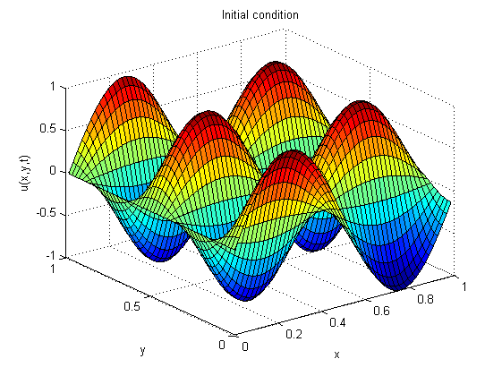 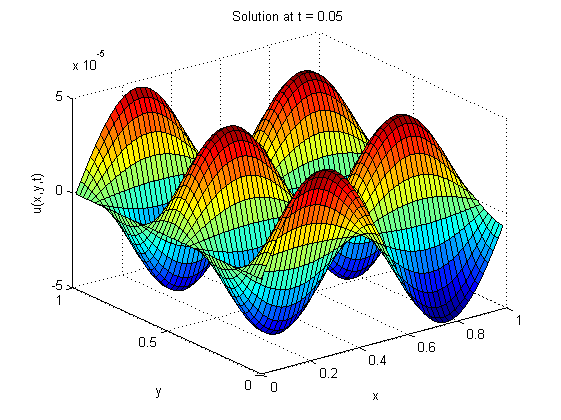 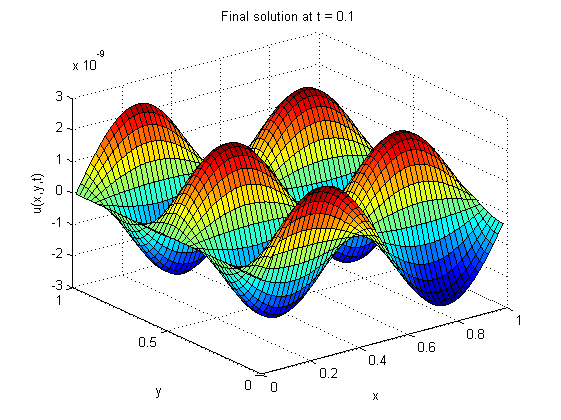
type heat2.m
close all
N = 50; %N = 50 gives an accurate solution surface.
dx = 1/N;
x1d = (0:dx:1-dx);
y1d = x1d; %x and y take values from 0 to 1-dx that are dx apart.
[x,y] = meshgrid(x1d,y1d);
%Creates a grid of points where each point has a unique representation (x,y).
L = lap1d_matrix(N,dx);
I = speye(size(L));
L = kron(L,I) + kron(I,L);
%Produces differentation matrix that will approximate uxx + uyy.
u = sin(2*pi*x).*cos(4*pi*y); %Initial condition.
dudt = -20*pi^2*u; %Exact initial value of du/dt = uxx + uyy.
dudt = dudt(:); %Straighten out dudt from a matrix to a vector.
figure(1); surf(x,y,u); title('Initial condition') %Plot initial condition.
xlabel('x'); ylabel('y'); zlabel('u(x,y,t)');
u = u(:); %Straighten out u.
tf = 0.1;
dt = 0.25*dx^2;
%In Ex 6 we said dt=<0.5*dx^2, so dt = 0.25*dx^2 ensures this.
numsteps = ceil(tf/dt);
for i = 1:numsteps
u = u + dt*dudt; %Calculate u at a time dt later using forward euler.
dudt = L*u; %Approximate uxx + uyy = du/dt.
%Note u must be straightened out to multiply with L.
if i == 500 %When t = 0.05 (i.e. i = 500), plot solution.
uplot = reshape(u,size(x));
%Reshape u into a matrix since surf doesn't work with vectors. The
%matrix must be the same size as x (and y) for surf to work, too.
figure(2); surf(x,y,uplot); title('Solution at t = 0.05')
xlabel('x'); ylabel('y'); zlabel('u(x,y,t)');
elseif i == numsteps %Plot final approximate solution.
uplot = reshape(u,size(x));
figure(3); surf(x,y,uplot); title('Final solution at t = 0.1')
xlabel('x'); ylabel('y'); zlabel('u(x,y,t)');
else
end
end
Exercise 8
type grayscott2.m
function grayscott2(N,str,eu,ev)
%GRAYSCOTT2 Numerically solves the Gray-Scott equations
% GRAYSCOTT2 takes inputs N and a string, str, and numerically solves the
% Gray-Scott equations on the square periodic domain [0,1)x[0,1) with a
% final time of 3000. N determines how many (x,y) points are plotted, and
% str determines whether spots or stripes conditions are used.
c = .065; %Sets F and c for spots or stripes as specified by str.
if strcmp(str,'spots') == 1
F = .03;
elseif strcmp(str,'stripes') == 1
F = .06;
else
error('str must be "spots" or "stripes"')
end
dx = 1/N;
x1d = (0:dx:1-dx);
y1d = x1d;
[x,y] = meshgrid(x1d,y1d); %Creates grid of x and y.
L = lap1d_matrix(N,dx); %Creates differentiation matrix
I = speye(size(L));
L = kron(I,L) + kron(L,I);
u = min(1, 10*sqrt((x-0.2).^2 + (y-0.2).^2)); %Set initial conditions.
v = max(0, 1 - 10*sqrt((x-0.3).^2 + 2*(y-0.3).^2));
figure(1); clf; pcolor(x,y,u); %Plot initial values of u.
xlabel('x'); ylabel('y'); title('u(x,y,t)')
figure(2); clf; pcolor(x,y,v); %Plot initial values of v.
xlabel('x'); ylabel('y'); title('v(x,y,t)')
tf = 6000;
dt = 0.1;
numsteps = ceil(tf/dt);
dt = tf/numsteps;
u = u(:); %Straighten out u and v.
v = v(:);
for i = 1:numsteps
dudt = eu*L*u - u.*v.^2 + F*(1-u); %Find du/dt and dv/dt as governed by
dvdt = ev*L*v + u.*v.^2 - (c+F)*v; %the Gray-Scott equations.
u = u + dt*dudt; %Iterate u and v using forward euler.
v = v + dt*dvdt;
if mod(i,floor(numsteps/10)) == 0 || i == numsteps
%Plot u and v periodically using pcolor.
uplot = reshape(u,size(x)); vplot = reshape(v,size(x));
figure(1); pcolor(x,y,uplot) %Plot u in figure 1.
xlabel('x'); ylabel('y'); title('u(x,y,t)')
figure(2); pcolor(x,y,vplot) %Plot v in figure 2.
xlabel('x'); ylabel('y'); title('v(x,y,t)')
else
end
end
eu1 = 5*10^-5; ev1 = 2*10^-5;
grayscott2(100,'stripes',eu1,ev1)
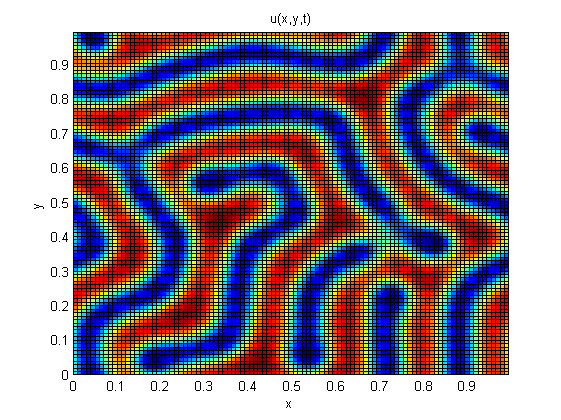 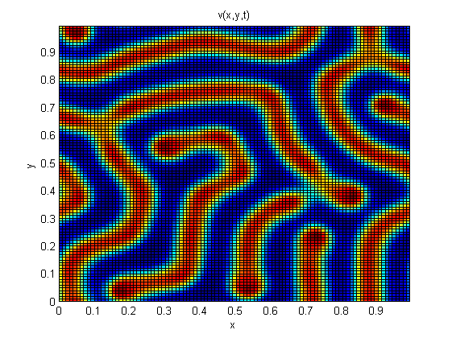
grayscott2(100,'spots',eu1,ev1)
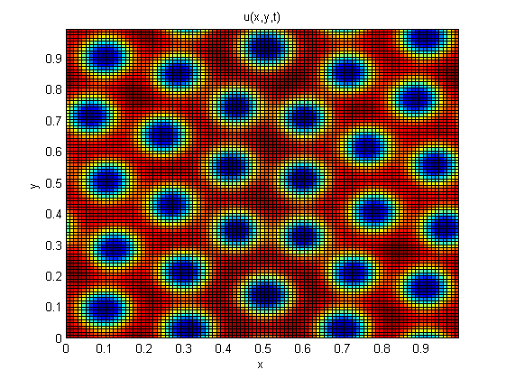 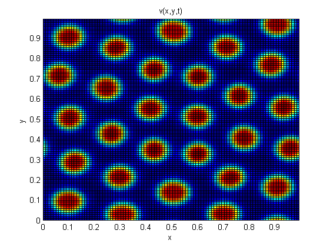
Exercise 9
grayscott2(100,'spots',0,0)
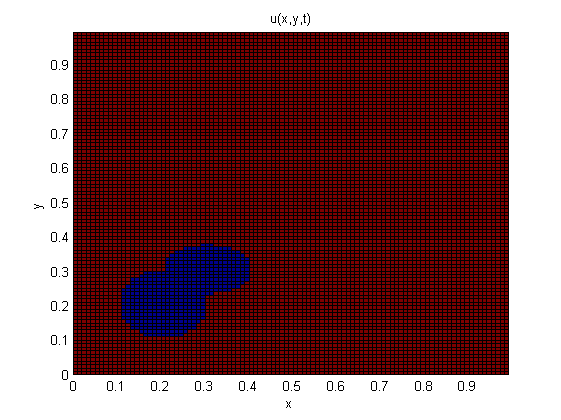 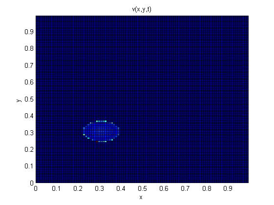
grayscott2(70,'spots',5*10^-6,5*10^-6)
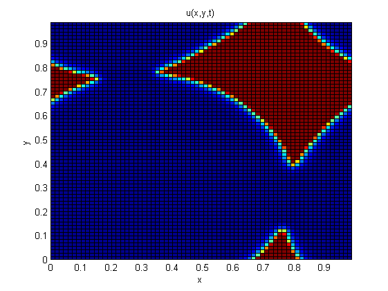 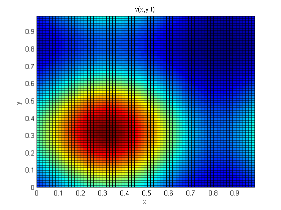
grayscott2(70,'spots',10^-5,10^-5)
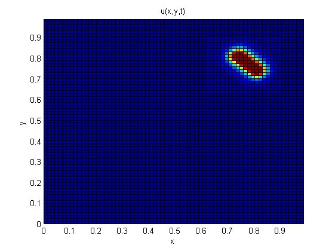 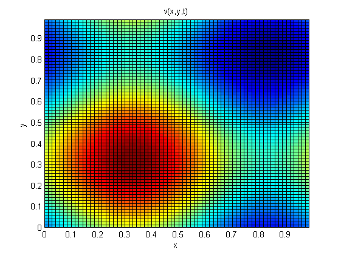